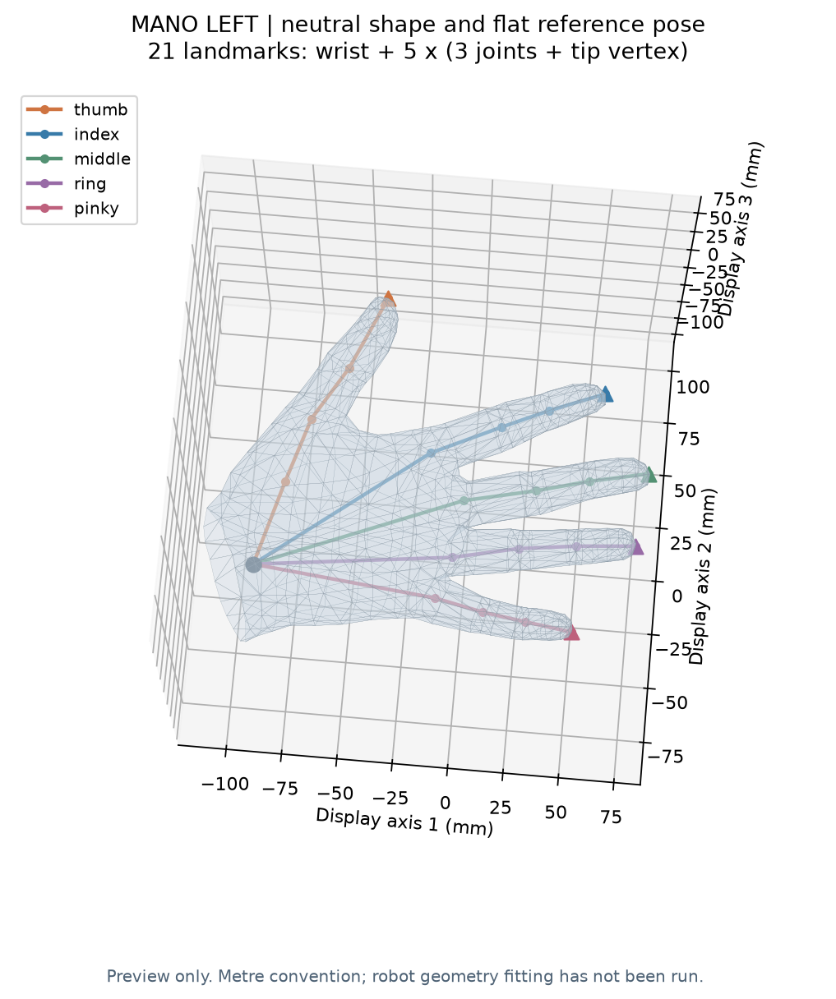

当前阶段：独立环境与 MANO 加载核查已通过；L20 FK、R 拟合、基线与网络训练尚未运行。
MANO 与 L20 独立 Conda 环境使用说明
日期：2026-10-14（Asia/Shanghai）。状态：独立环境已创建；包一致性、激活/退出与 MANO 加载核查通过。L20 FK、几何拟合与训练未运行。
1. 环境在哪里
E:\lingqiaoshou\dex-mapping\.conda\envs\mano-l20
这是放在项目目录中的 Conda 环境。Conda 仍使用已有的 D:\conda\Scripts\conda.exe 管理它；依赖安装到新环境，不安装进 base。
| 项目 | 实际版本 / 状态 |
|---|---|
| Python | 3.11.17 |
| PyTorch | 2.14.1+cpu |
| NumPy | 1.26.4 |
| SciPy | 1.17.1 |
| smplx | 0.1.28 |
| Matplotlib | 3.11.2 |
| Trimesh | 4.12.2 |
| Markdown | 3.11.1 |
| yourdfpy | 0.0.60（v3 FK 独立复核） |
| pip check | No broken requirements found |
当前是 CPU 环境，能够运行 MANO 前向、梯度计算和小规模几何拟合。GPU、显存与 CUDA 版本仍待确认，网络训练依赖后续另行安排。
包和下载缓存放在项目 .conda/，该目录已加入 .gitignore。原始 MANO/URDF/网格仍位于用户提供的目录，保持只读。
2. 每次打开 PowerShell 怎样用
在 PowerShell 中依次运行：
cd E:\lingqiaoshou\dex-mapping
. .\scripts\activate_mano_l20.ps1
第二行开头的 . 后有一个空格，表示把激活脚本作用到当前终端。运行后应打印：
E:\lingqiaoshou\dex-mapping\.conda\envs\mano-l20\python.exe
3.11.17
激活的作用是让此终端的 python 指向新环境。以后新开一个终端，重复激活即可。
可以再检查：
python -c "import torch, smplx; print(torch.__version__)"
python -m pip check
退出环境：
conda deactivate
Conda 22.9 与当前 PowerShell 的原生参数传递存在兼容问题，已在激活脚本中使用当前会话的 Legacy 规则处理；不修改 PowerShell profile。Anaconda Prompt 中可直接使用 conda activate 加完整环境路径。
3. 已做了什么验证
实际输出位于 v2_MANO加载兼容修正：
- MANO 原始文件可读取，形状基底为 778×3×10，姿态校正为 778×3×135。
- 在 smplx 中生成左手、β=0、完整局部姿态=0、整体旋转/平移=0 的参考网格：778 顶点、1538 三角面、16 原生关节。
- 按作者 smplx 的指尖顶点规则导出 21 点，并明确重排为腕、拇、食、中、无名、小。
- 中性顶点与原始模板最大绝对差为 6.3083e-9 模型单位，关节差为 6.2102e-10；在基于加载器精度的数值容差内。
- 形状梯度有限且非零；指定姿态扰动后顶点变化有限且非零。
- L20 的 URDF 和它引用的 22 个不同网格文件均存在，并记录了哈希；没有据此宣称 FK、网格尺度或真实驱动已验证。

图中使用显示用的旋转坐标；导出的关键点仍保持 MANO 原始坐标。图的参考手形还没有拟合到 L20。
4. 重跑 MANO 检查
两个模型的路径保存在 mano_l20_paths.json，以后移动原始文件时修改这里即可。
激活环境后，在项目目录运行：
python scripts/check_mano_model.py --config environment/mano_l20_paths.json --output experiment/v2_MANO加载兼容修正/user_check_001
首次使用这个输出目录会保存模型、图和 JSON；再次运行时要换新的运行目录，以保留旧记录。smplx 提示 only 10 shape coefficients 表示当前文件提供 10 维形状参数，符合此次配置。
旧 MANO 文件中 shapedirs 是 Chumpy 的存储对象。脚本只解析该文件中已核查的 Ch/Select 数值数组，交给 smplx 运算；没有安装旧 Chumpy，也没有改变模型参数。这一兼容读取不支持任意 Chumpy 计算图。
5. 重建环境和依赖记录
实际 Conda 包列表见 conda-win-64-explicit.txt；完整 Python 包列表见 requirements-full-lock.txt。CPU PyTorch 和其他包分别有锁定文件，以保留 PyTorch 官方 CPU 下载源。
Windows 下重建/补齐依赖可运行：
.\scripts\setup_mano_l20_env.ps1
环境已存在时脚本复用它，并按锁定版本检查依赖。首次创建使用 conda-forge；PyTorch 使用官方 CPU wheel 源；其余 Python 包使用 PyPI。安装脚本不进行训练或机器人控制。
6. 下一步的单一目标
完成 L20 正运动学与坐标检查，再定义腕部和五个指尖。 验证模型动对手指、方向和联动后，建立 MANO/L20 对应表，才能开始仅尺度与 β+尺度拟合。
现有 L20 建模指南仍是后续路线；本轮仅完成环境与 MANO 加载，没有得到拟合后的 β_R，更没有训练两阶段网络。